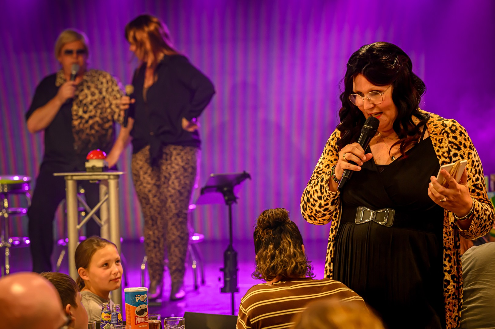
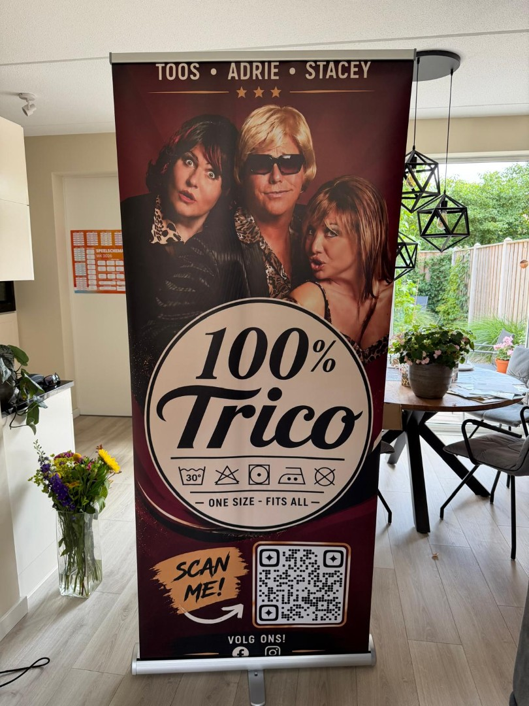

Muziekbingo
Drie rondes, alle hits live gezongen, bingokaarten voor alle gasten en volop extra prijzen voor enthousiaste meezingers en dansers.
Ontdek de Muziekbingo →
ONE SIZE – FITS ALL
Van Muziekbingo en Dinershow tot feest, kerstshow of compleet avondprogramma. Live gezongen, vol humor en altijd passend gemaakt voor jouw gelegenheid.

Welke Trico past bij jullie?
Geen standaardprogramma waar jullie in moeten passen. We kijken naar de gelegenheid, het publiek en de beschikbare tijd en maken daar een passende Trico van.
Drie rondes, alle hits live gezongen, bingokaarten voor alle gasten en volop extra prijzen voor enthousiaste meezingers en dansers.
Ontdek de Muziekbingo →100% Trico verzorgt het entertainment bij uw diner of kerstdiner, met live zang, humor, quiz en de Foute Verloting. Uiteraard in overleg.
Ontdek de Dinershow →Boek één blok van ongeveer 30 minuten, combineer meerdere muziekblokken of maak er samen met ons een compleet avondprogramma van.
Stel jouw Trico samen →Kerstshow, Kerst Muziekbingo of een originele manier om kerstpakketten uit te delen. Feestelijk, live en natuurlijk op maat.
Kerst met Trico →

100% Trico Muziekbingo
Iedereen ontvangt een bingokaart. Wij zingen alle hits live en de gasten gaan op zoek naar de bijpassende nummers en kruisen deze aan op hun bingokaart.
We spelen 3 rondes en hebben veel extra prijzen die we tussendoor weggeven voor enthousiaste gasten die hard meezingen en dansen.
Prijzen kunnen wij in overleg regelen, maar de klant kan natuurlijk ook zelf prijzen verzorgen.
Muziekbingo aanvragenDinershow
100% Trico verzorgt het entertainment bij uw diner of kerstdiner. In overleg met de klant en eventueel het restaurant plannen we het entertainment passend tussen de gangen.
Denk aan live gezongen smartlappen, Hollandse hits, Songfestival en jaren 70-hits. En omdat alleen zingen natuurlijk veel te rustig zou zijn, kunnen ook onze quiz en de Foute Verloting langskomen.


Smartlappen, Hollandse hits, Songfestival en jaren 70-hits tussen de gangen door.
Lootjes voor de gasten, grappige prijzen en precies genoeg chaos om het diner niet té netjes te laten verlopen.
Een interactieve quiz die we passend kunnen inzetten binnen het programma.
Van 30 minuten tot avondvullend
Op een feest, verjaardag, camping of in een zorginstelling kunnen we bijvoorbeeld blokken van ongeveer een half uur zingen. Kies één blok of combineer meerdere stijlen.
Alles kan op maat. Een half uur, een uur, anderhalf uur, een compleet avondprogramma of zelfs meerdere dagen achter elkaar.


Kerst met 100% Trico
Voor bedrijfsfeesten, campings en andere kerstgelegenheden verzorgen we kerstshows en Kerst Muziekbingo's. Met feestelijke aankleding, live gezongen kerstnummers én natuurlijk de bekende Trico-humor.
De Kerst Muziekbingo kan ook een originele manier zijn om kerstpakketten uit te delen.
Ook hier geldt: van programma en duur tot de invulling van het entertainment — we kijken samen wat past.
Kerstprogramma besprekenMaak kennis met de familie

De zelfbenoemde regelaar van de familie – en naar eigen zeggen een behoorlijk stoere bink.
Adrie Trico is de broer die ervan overtuigd is dat zonder hem werkelijk helemaal niets geregeld zou worden. Hij houdt graag de touwtjes in handen, deelt gevraagd én ongevraagd zijn mening en probeert tussen zijn twee luidruchtige zussen nog een beetje orde in de chaos te bewaren. Of dat lukt? Dat is een ander verhaal.
Adrie is getrouwd en vader van vijf kinderen. Die vinden het allemaal prachtig wat hun vader doet… zolang ze zelf maar lekker buiten de schijnwerpers blijven.
In een vorig leven had Adrie zijn eigen sloopbedrijf. Slopen, aanpakken en niet te veel zeuren: dat past hem wel. Die mentaliteit neemt hij ook mee binnen de familie Trico. Al ontdekt hij regelmatig dat een gebouw slopen waarschijnlijk eenvoudiger is dan zijn zussen Toos en Stacey in het gareel houden.
Hij vindt zijn zussen veel te luidruchtig, bemoeizuchtig en aanwezig. Helaas voor Adrie zijn zij precies hetzelfde over hem van mening.

Toos Trico is het kloppende familiehart van 100% Trico. Een echt gezelligheidsdier dat het liefst onder de mensen is. Geef haar een buurtbingo, een kop koffie en een tafel vol bekenden en Toos heeft een topavond. Al helemaal als er iets te winnen valt.
Thuis kan ze uren verdwijnen in haar grote liefde: diamond painting. Steentje voor steentje werkt ze geduldig aan de mooiste kunstwerken. Een geduld dat ze in de liefde overigens een stuk minder heeft… want Toos is snel verliefd. Een leuke blik, een beetje aandacht en voor je het weet heeft ze de trouwlocatie in haar hoofd al uitgezocht.
Ook is Toos gek op tv-quizzen. Vanuit de bank weet ze opvallend vaak het juiste antwoord en begrijpt ze werkelijk níéts van kandidaten die het fout hebben. Zelf meedoen? Graag! Want naast slim zijn – al krijgt ze thuis niet altijd de kans dat te bewijzen – staat Toos ook maar wat graag in de spotlight.
Familie, gezelligheid, bingo, glittersteentjes, televisie én een beetje romantiek: dat is Toos. En zodra de muziek begint en de spotlights aangaan, weet ze één ding zeker:
Dit is míjn moment. Adrie, aan de kant!

De benjamin van de familie – en bepaald niet de stilste.
Stacey Trico is het nakomertje van de familie en weet als geen ander hoe je aandacht krijgt én vasthoudt. Ze is ondeugend, een tikje losbandig en vooral dol op praten. Sterker nog: als Stacey eenmaal begint, is de kans klein dat iemand anders nog aan de beurt komt.
In het dagelijks leven heeft Stacey zich gespecialiseerd in permanent zetten en permanente make-up. Want volgens Stacey is er maar één ding erger dan een slechte coupe: er iedere ochtend opnieuw iets aan moeten doen.
Als benjamin denkt ze dat ze overal mee wegkomt. En vervelend genoeg lukt haar dat meestal ook. Ze houdt van gezelligheid, een drankje, een feestje en heeft altijd wel een verhaal waarvan de rest van de familie zich afvraagt of het écht zo gebeurd is.
Op het podium zorgt Stacey voor spontaniteit, humor en een gezonde dosis chaos. Ze flirt met het publiek, bemoeit zich overal mee en heeft over werkelijk alles een mening.
Stacey Trico: permanent ondeugend, ijdel.
Onze neef Techni-Koos
Onze neef Techni-Koos verzorgt ons geluid en eventueel kan er licht bijgeboekt worden.
In principe gaat Techni-Koos mee. Bij kleinere groepen bekijken we samen of dat qua budget passend is. Standaard kunnen we geluid verzorgen tot ongeveer 150 personen, maar voor grotere groepen is er natuurlijk ook van alles mogelijk.
Zoals met bijna alles bij Trico: we bekijken het op maat.
Reacties van gasten
“Bedankt voor de fantastische avond! Het was geweldig!”
“Mega, ihr seid der Wahnsinn. Das war so ein cooler abend gestern.”
“Jullie zijn geweldig Bravo!”
“One of the best holiday entertainments we have been to. We loved it and came back for a second week during our stay at Duinrell 👏👏”
“Het was een TOP avond. Wat een feest!! 🥳”

Voor klein, groot en alles ertussenin
Van een intiem feest tot een groot bedrijfsevenement. Van Nederland tot over de grens. 100% Trico kan overal optreden.
ONE SIZE – FITS ALL.
Boeken & beschikbaarheid
Vertel ons wat voor gelegenheid het is, hoeveel gasten jullie verwachten en wat jullie ongeveer in gedachten hebben. Dan kijken we samen naar een passende invulling.